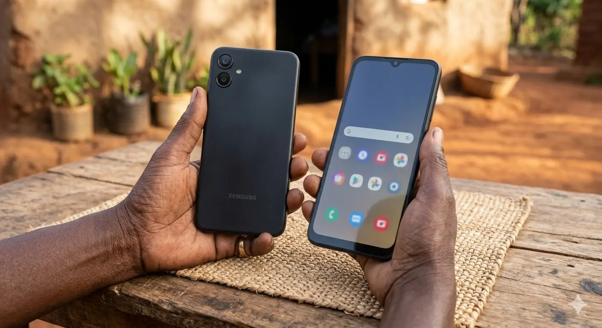
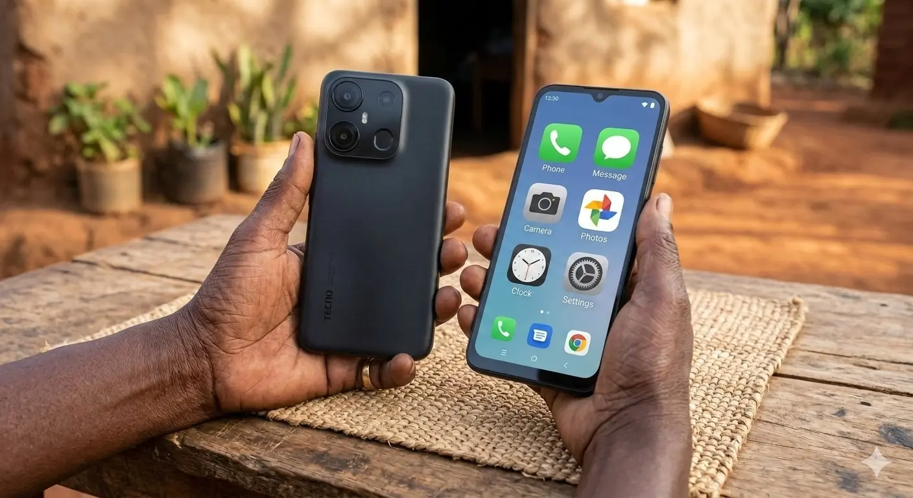
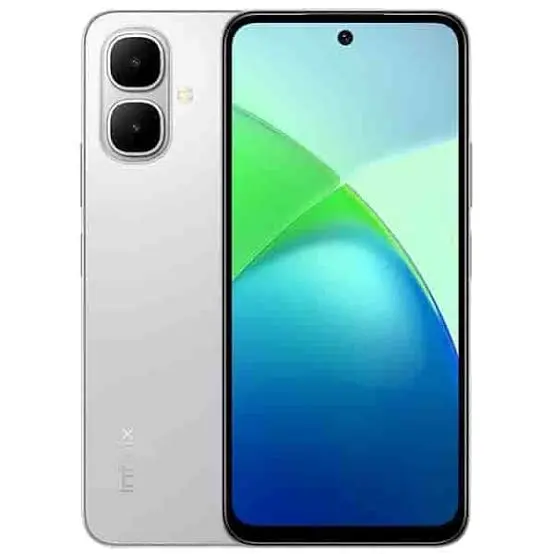
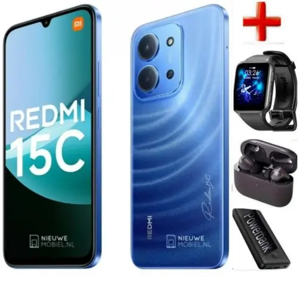
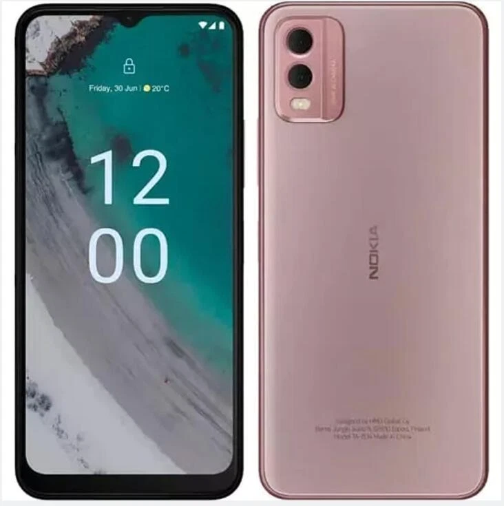

What Actually Matters in a Senior's Phone
Phone shops will dazzle you with words like "octa-core," "120Hz refresh rate," and "AI camera." For an older adult in Kenya, most of this does not matter.
Here is what actually matters:
| Feature | Why It Matters | What to Look For |
|---|---|---|
| Big screen | Larger text without squinting | 6.5 inches or bigger |
| Loud speaker | Hear calls and voice notes clearly | High volume output, clear audio |
| Long battery | Charge once, use for two days | 5,000mAh or bigger |
| Simple mode | Big icons, fewer distractions | "Easy Mode," "Lite Mode," or similar |
| Strong build | Survives drops and dust | Tough plastic or Gorilla Glass |
| Local repair | Fix it in Nakuru, not Nairobi | Brands with nationwide service centres |
Our Top Picks for 2026

1. Samsung Galaxy A07 4G — Best Overall Choice
| What You Get | Why It Helps |
|---|---|
| 6.5-inch screen | Big, bright, easy to read |
| 5,000mAh battery | Lasts two days with normal use |
| Samsung Easy Mode | Enlarges icons, simplifies home screen, prevents accidental app moves |
| 4GB RAM | Runs WhatsApp and M-Pesa without freezing |
| Multi-year security updates | M-Pesa and banking apps stay safe for years |
The honest truth: Samsung costs a little more than Tecno or Infinix, but you are paying for peace of mind. Samsung has official service centres in Nairobi, Mombasa, Kisumu, and Nakuru. If something breaks, you fix it locally — no sending phones to China.
Best for: Older adults who want reliability, brand trust, and a phone that "just works" without constant tinkering.

2. Tecno Pop 10 — Best Value for Money
| What You Get | Why It Helps |
|---|---|
| 6.67-inch screen | One of the biggest screens in this price range |
| 5,000mAh battery | Easily lasts a day and a half |
| Loud dual speakers | Hear calls in noisy markets or matatus |
| Tough plastic build | Survives drops better than glass phones |
| Carlcare repair network | Service centres in almost every major Kenyan town |
The honest truth: Tecno loads some extra apps you will not use (bloatware). But these can be hidden or ignored. The real win is Carlcare — if your screen cracks in Eldoret or your battery dies in Meru, you walk into a shop and walk out fixed.
Best for: Older adults on a tight budget who need a big screen and loud audio without spending extra.

3. Infinix Smart 10 — Best Ultra-Budget Pick
| What You Get | Why It Helps |
|---|---|
| 6.67-inch HD+ screen | Smooth scrolling, clear text |
| 5,000mAh battery | 1.5 to 2 days of basic use |
| 120Hz refresh rate | Animations feel smoother (nice, not essential) |
| 4GB RAM / 64GB storage | Enough for WhatsApp, M-Pesa, and family photos |
| IP64 dust and water resistance | Survives splashes and dusty environments |
The honest truth: The camera is basic. Photos in low light will look grainy. But for video calls with grandchildren and the occasional family photo, it is fine. Where this phone wins is price-to-performance — it does everything essential at the lowest cost.
Best for: First-time smartphone users who want to test the waters without a big investment.

4. Xiaomi Redmi 15C — Best for Battery and Storage
| What You Get | Why It Helps |
|---|---|
| 6.9-inch screen | The biggest screen on this list |
| 6,000mAh battery | Two full days of heavy use — the longest battery here |
| 33W fast charging | Charges to 50% in about 30 minutes |
| 128GB storage | Thousands of photos and videos without "Storage Full" warnings |
| Xiaomi Lite Mode | Simplified interface, big text, high contrast |
The honest truth: Xiaomi's software (HyperOS) takes a little more setup than Samsung's Easy Mode. You may need a grandchild's help for the first 15 minutes. But once configured, this phone is a battery beast with more storage than phones twice its price.
Best for: Older adults who take lots of photos, watch YouTube videos, or forget to charge their phone every night.

5. Nokia C32 — The Trust Pick (Wild Card)
| What You Get | Why It Helps |
|---|---|
| 6.5-inch screen | Clear and readable |
| 5,000mAh battery | Two-day battery life |
| Pure Android | No bloatware, no confusing extra apps |
| Nokia brand trust | Older adults already know and trust Nokia from feature phone days |
| 3-day battery in power saver mode | For light users, charge once, use for three days |
The honest truth: The Nokia C32 is slower than the Samsung or Xiaomi. It will not win speed contests. But it is clean, simple, and familiar. For an older adult upgrading from a Nokia 105 or 3310, this feels like coming home — but with WhatsApp.
Best for: Older adults who are nervous about smartphones and want the simplest, most familiar experience possible.
Side-by-Side Comparison
| Phone | Price (KSh) | Screen | Battery | Best Feature | Trade-Off |
|---|---|---|---|---|---|
| Samsung Galaxy A07 | 13,500 – 15,500 | 6.5" | 5,000mAh | Easy Mode + brand trust | Slower charging |
| Tecno Pop 10 | 11,000 – 13,000 | 6.67" | 5,000mAh | Loud speakers + Carlcare repairs | Some bloatware |
| Infinix Smart 10 | 10,700 – 12,500 | 6.67" | 5,000mAh | Lowest price, dust/water resistant | Basic camera |
| Xiaomi Redmi 15C | 11,699 – 16,500 | 6.9" | 6,000mAh | Biggest battery + most storage | Needs initial setup help |
| Nokia C32 | 12,000 – 14,000 | 6.5" | 5,000mAh | Pure Android, familiar brand | Slower performance |
Essential Setup Steps (Do These Before Handing Over the Phone)
Whether you buy the phone for yourself or a parent, complete these steps first:
1. Enable Simple Mode
| Phone | Path |
|---|---|
| Samsung | Settings → Display → Easy Mode → Toggle ON |
| Xiaomi | Settings → Special Features → Lite Mode → Turn ON |
| Tecno / Infinix | Settings → Display → Simple Mode or increase font size manually |
| Nokia | Settings → Display → Font Size → Largest + Bold Text → ON |
2. Increase Font Size and Bold Text
Settings → Display → Font Size and Style → Slide to maximum → Enable Bold Text.
3. Set Up Speed Dial
Open the Phone app → Tap the three dots → Speed Dial → Assign family members to numbers 2 through 9. Press and hold "2" to call your son. No need to scroll through contacts.
4. Install a Sturdy Case and Screen Protector
Buy a shockproof silicone case with raised edges and a tempered glass screen protector before handing over the phone. A KSh 500 case can prevent a KSh 5,000 screen replacement.
5. Pin Essential Apps to the Home Screen
Remove unnecessary apps. Keep only: Phone, Messages, WhatsApp, M-Pesa, Camera, Settings. Everything else can go in a folder or be hidden.
Where to Buy in Kenya
| Retailer | Why Consider | Tip |
|---|---|---|
| Safaricom Shop | Official warranty, genuine products | Prices may be slightly higher, but zero risk of fakes |
| Jumia / Kilimall | Home delivery, frequent discounts | Check seller ratings; buy only from "Official Store" |
| Local phone shops (Nakuru, Eldoret, Mombasa) |
Can negotiate, immediate availability | Ask for a 1-year warranty in writing |
| Carlcare centres (Tecno/Infinix) |
Buy + service in one place | Best for Tecno and Infinix buyers |
Final Word: The Best Phone Is the One They Will Actually Use
The most powerful phone in the world is useless if it sits in a drawer because it is too complicated, too fragile, or too frustrating.
For an older adult in Kenya, the best phone is:
- Big enough to read without glasses
- Loud enough to hear in a noisy room
- Strong enough to survive a drop
- Simple enough to use without asking for help every day
- Supported enough to fix locally when something breaks
Any of the five phones above checks those boxes. The question is not which is "best" — it is which fits their hands, their eyes, and their budget.